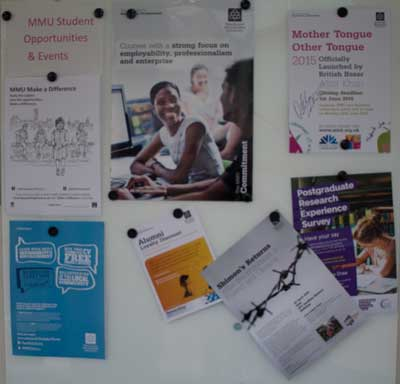

News and Events
Growing Asian Businesses, Developing Asian Markets
Monday, 30th March 2015
Asia Triennial presents “Growing Asian Businesses, Developing Asian Markets” a keynote speech by entrepreneur and philanthropist Peter Virdee. This event will focus on celebrating the Asian business community within Manchester along with inspiring those within the community.
Postgraduate Course Fair
Wednesday, 3rd June 2015
Asia Triennial presents “Growing Asian Businesses, Developing Asian Markets” a keynote speech by entrepreneur and philanthropist Peter Virdee. This event will focus on celebrating the Asian business community within Manchester along with inspiring those within the community.
Undergraduate Open Day
Wednesday, 24th June 2015
If you are interested in studying a course within our department then open days are the perfect way to find information on courses; meet current students and staff and take tours of the facilities, you will have access to if you choose to study with us. Along with this, you will also have the ability to find information on how to apply; personal statement issues and student finance.
Metadata and Semantics Research Conference (9th)
Wednesday, 9th September 2015 – Friday, 11th September 2015
The Metadata and Semantics Research Conference will continue its previous success for its ninth instalment. This conference focuses on combining scholars and practitioners that share common interests in the field of metadata, semantics, linked data and ontologies. The participants of this event will share knowledge and best practises regarding information environments and applications. Such systems include Cultural Informatics; Open Access Repositories & Digital Libraries; E-learning applications; Search Engine Optimization & Information Retrieval; Research Information Systems and Infrastructures; e-Science and e-Social Science applications; Agriculture, Food and Environment; Bio-Health & Medical Information Systems.